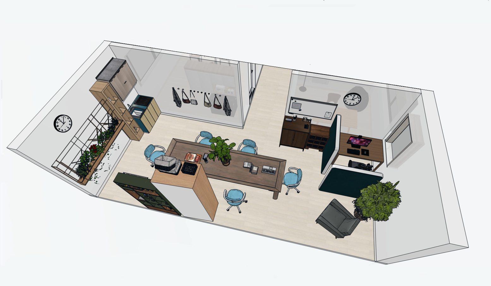

Strukturerat och relationsbaserat arbete i lugn miljö, med fokus på gemenskap, social träning och naturinriktade aktiviteter.

Fönstergruppen präglas av lugn, gemenskap och aktivitet i ett tryggt tempo. Miljön hålls strukturerad och förutsägbar, vilket skapar stabilitet för deltagarna.
Arbetet sker både individuellt och gemensamt, med tydliga rutiner, bildstöd och låg affektivitet som grund.